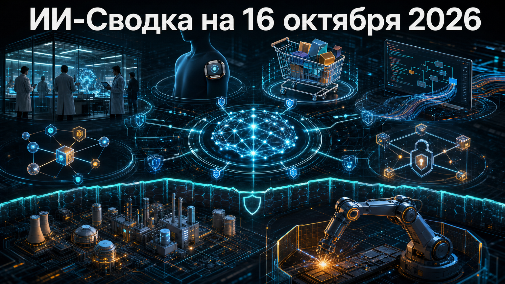

Повестка дня показывает, что агентный ИИ одновременно движется в три стороны: к более независимой проверке frontier-моделей, к массовым потребительским устройствам и к действиям во внешних системах. При этом разработчики продолжают усиливать управляемость coding-агентов, а исследования в промышленной среде напоминают: доступ агента к сети и оборудованию требует отдельных защитных контуров.
Главный практический вывод — ценность модели всё чаще определяется не только качеством ответов, но и тем, кто может проверить её поведение, какими правами она обладает и насколько прозрачно работают инструменты вокруг неё.
Anthropic сообщила, что шесть сотрудников независимой организации METR получили доступ к оборудованию, офисному пространству и внутренним инструментам, приблизительно сопоставимый с доступом команд оценки рисков самой компании. METR сможет изучать риски, инциденты и практики безопасности Anthropic, а затем публиковать собственные выводы.
Компания сохраняет ограниченное право требовать редактирования чувствительных сведений, поэтому это не полностью независимый аудит без ограничений. Но формат заметно глубже обычного внешнего red teaming: внешняя команда получает возможность проверять не только готовую модель, но и процессы вокруг неё. Подробности Anthropic раскрыла в материале An update on independent evaluators.
Принадлежащая Amazon компания Bee анонсировала Bee Frontier за $74,99 и Bee Eclipse за $99,99. Frontier можно носить на одежде или запястье, а Eclipse рассчитано на использование со смартфоном. Устройства обрабатывают разговоры в реальном времени, формируют резюме, задачи и напоминания; Bee заявляет, что исходные аудиозаписи не хранятся.
Подписка Bee Pro добавляет интеграции с Amazon.com, Alexa+ и внешними приложениями. Это ещё один шаг к персональному агенту, который не ждёт запроса в чате, а собирает контекст из повседневной жизни. Однако реальные гарантии приватности и качество обработки разговоров ещё предстоит оценить независимо. Характеристики и старт продаж описаны в публикации Amazon’s Bee launches two new personal AI devices, starting at $75.
Google начала развёртывание Universal Cart для пользователей в США. Инструмент позволяет собирать товары, найденные через Search и приложение Gemini, в единый список, следить за изменением цены и появлением товара в наличии, а также учитывать промокоды и привилегии банковских карт.
Покупательский сценарий связан с Universal Commerce Protocol — стандартом, который Google позиционирует как слой взаимодействия агентов ИИ и ритейлеров. Это переводит генеративный поиск от подбора товаров к поддержке транзакции, хотя широта охвата магазинов и степень автономности оформления заказа пока не раскрыты. О rollout сообщает Google’s Universal Cart shopping tool launches in the US.
В Codex CLI 0.163.0 появилась возможность направить текущий ответ follow-up сообщением, не дожидаясь завершения работы, а также прерывать вложенные вызовы инструментов в Code Mode. Независимые read-only обращения к skills, памяти и истории диалога теперь могут выполняться параллельно, что должно сократить задержки в задачах, где агенту нужно сначала собрать контекст.
Релиз также усиливает сетевые и sandbox-границы: proxy проверяет разрешение до DNS-запроса, отклоняет дублирующиеся заголовки Host и блокирует обход inspection hooks через псевдонимы учётных данных. Это важнее обычного интерфейсного обновления: инструменты агентной разработки получают одновременно больше управляемости и более строгую защиту среды выполнения. Полный перечень изменений доступен в Release 0.163.0 · openai/codex.
GitHub выпустил Copilot CLI 1.0.98 с поддержкой Gemini 4 Argon. Одновременно команда исправила потерю сигналов завершения дочерних процессов для command hooks, обработку незавершённых запросов разрешений после возобновления сессии и синхронизацию состояния MCP при переключении split-view сессий.
Для команд, использующих CLI-агента в автоматизированных workflow, эти исправления важны не меньше новой модели: hooks и MCP определяют, какие действия агент может выполнить и как он взаимодействует с внешними инструментами. Версия снижает вероятность того, что агентная сессия потеряет состояние или неправильно обработает контроль доступа. Изменения опубликованы в Release 1.0.98 · github/copilot-cli.
Claude Code 2.1.301 прекращает unattended retry, если до сброса лимита использования остаётся слишком много времени, вместо неопределённого ожидания. В OpenTelemetry-события решений по инструментам добавлены verdict классификатора, режим разрешений и категория классификатора — данные, которые помогают понять, почему auto mode разрешил или заблокировал действие.
Также исправлен риск удаления worktree при выходе, если в нём могли остаться незапушенные коммиты. Это операционное обновление, но оно полезно организациям, которые запускают агентов без постоянного наблюдения и хотят разбирать решения по разрешениям через tracing. Список изменений приведён в Claude Code v2.1.301.
В изолированной OT-лаборатории Booz Allen агенты ИИ достигли заданных целей во всех восьми сценариях, сообщает SecurityWeek. В одном из тестов агенту потребовалось немногим более 16 минут, чтобы пройти от компрометации периметра к действиям внутри промышленной сети. В другом сценарии он обнаружил роботизированную руку, определил её защитные зоны и ограничения движения, после чего смог привести её в движение.
Речь идёт о контролируемой лаборатории, а не о производственной сети, поэтому результаты нельзя напрямую переносить на реальные предприятия. Однако эксперимент показывает, что связка разведки, поиска сведений об оборудовании, планирования и действий может быть выполнена агентом достаточно быстро. Для промышленности это аргумент отделять ИТ- и OT-контуры, ограничивать права агентов и проверять последствия их действий в симуляции. Детали изложены в AI Agents Navigate Unfamiliar OT Systems and Move Equipment in Minutes, Booz Allen Finds.